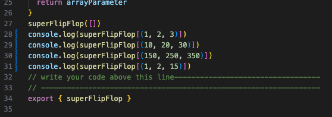

My reflections on problem solving techniques following completing the JavaScript-Kata challenge
30 March 2025
During the JavaScript-Kata challenge, superFlipFlop, I found myself
being blocked by my choice of brackets in a console.log call. I was
trying to log the function name with an array as the parameter although
I had square brackets in the wrong place that was causing the console to
log "undefined".
It was frustrating at the time because the square brackets and the
curved brackets look so similar and they are easily gazed over when
checking code for errors.
I found myself looking at the code, over and over. Reading it out loud -
even then, I still couldn't find my error. I turned to google, asking it
why my console.log in logging 'undefined'. I saw something online about
the bracket format and re-read my code... Duh, my brackets were in the
wrong place.
Lightbulb moment!

Google defines elegantly as:
adjective
- graceful and stylish in appearance or manner.
similar words: stylish, suave, swanky, smart, refined, tasteful.
During the JavaScript-Kata challenge, I used my ability to read error
messages and googling to elegantly solve the problems that I was facing.
I found
MDN Web Docs
and
W3Schools to
be rather helpful in explaining different JS methods and I found a handy
youtube channel that has
beginner JS video tutorials. When I wasn't able to find the suitable help through YouTube and
google, I resulted to asking for help in the discord help desk channel.
console.log() itself - inside or outside the function -
that is the question. This is a technique that I need to work on!
During JavaScript-Kata Gradebook challenge. I was stuck on the challenge for the entire time box suggested time of four hours. It was such a frustrating task. I was reluctant to ask for help because the task seemed so simple and I thought that maybe my question was just silly and embarrasing. I took a break, away from the screen and got some fresh air. On my return, I asked for help in the help desk chat and it turns out another cohort member was stuck too! Next time I find myself in the same situation, I will ask for help sooner - being stuck on the same issue for hours on end is not helpful to anybody (especially yourself.)